Brittany edition · Departments 35 and 56
This chapter follows the supplied Rasters 1 sequence on a continuous study area spanning Ille-et-Vilaine and Morbihan: data, mosaicking, masking/cropping, visualisation, resampling, terrain analysis and interpolation. Every figure below comes from executing the displayed R code.
Inputs and scale
The inputs are 20 numeric IGN BD ALTI V1 extraction tiles on a 25 m Lambert-93 grid. They are elevation values, not a shaded-relief image. An ASCII sample teaches the six-line header; GeoTIFFs keep the complete coverage compact. Regional visualisation uses 250 m products, local terrain analysis uses 25 m data, and interpolation is evaluated on a 10 m grid without claiming 10 m source detail. Sources, retrieval and adaptations.
Complete R script · Regional 250 m DEM · Local 25 m DEM · Exercise points · Reconstruction scores
Run the steps in order from the repository root. Install terra once with install.packages("terra") (installation help). The full 25 m input coverage is included in the data archive; mosaics and masks are recreated locally under outputs/module-06/work/.
Locate departments 35 and 56
Department contours: IGN-derived Contours administratifs 2026, ODbL. Basemaps need Internet; the R figures below are saved locally.
6.1 · Data: departments 35 and 56 and an ASCII header
The teaching area is Ille-et-Vilaine and Morbihan. Read an ASCII example and inspect the six header lines before loading the complete 25 m terrain coverage.
R code
library(terra)
terraOptions(memfrac = 0.25)
dept <- vect("data/vectors/departments-35-56.gpkg")
stopifnot(setequal(dept$code, c("35", "56")), same.crs(dept, "EPSG:2154"))
ascii_file <- "data/rasters/bdalti-35-56-ascii-example.asc"
print(readLines(ascii_file, n = 6))
sample_tile <- rast(ascii_file)
crs(sample_tile) <- "EPSG:2154"
print(sample_tile)
print(as.data.frame(dept)[, c("code", "nom")])
plot(sample_tile, col = hcl.colors(60, "Terrain"), main = "ASCII example: elevation (m)")Why these functions? · official R help
as.data.frame()— Inspect attributes or build the output-distribution comparison table. In R:help("as.data.frame", package = "base")c()— Collect options, colours, labels and terrain-index names. In R:help("c", package = "base")crs()— Identify the CRS before interpreting cell dimensions or calculating terrain. In R:help("crs", package = "terra")hcl.colors()— Choose perceptually ordered colours for continuous values. In R:help("hcl.colors", package = "grDevices")library()— Load terra and its spatial methods. In R:help("library", package = "base")plot()— Draw the raster with an explicit legend and units. In R:help("plot", package = "terra")print()— Display numerical output beneath the corresponding code. In R:help("print", package = "base")rast()— Open the numeric elevation tiles or create a target grid with an explicit extent, resolution and CRS. In R:help("rast", package = "terra")readLines()— Read the six plain-text ASCII header lines without interpreting the raster values. In R:help("readLines", package = "base")same.crs()— Check that raster and vector coordinates refer to the same CRS. In R:help("same.crs", package = "terra")setequal()— Verify that the selected department codes are exactly 35 and 56. In R:help("setequal", package = "base")stopifnot()— Stop execution if a grid or export verification fails. In R:help("stopifnot", package = "base")terraOptions()— Set a memory-use fraction for processing the full regional mosaic. In R:help("terraOptions", package = "terra")vect()— Read the example boundary polygons. In R:help("vect", package = "terra")
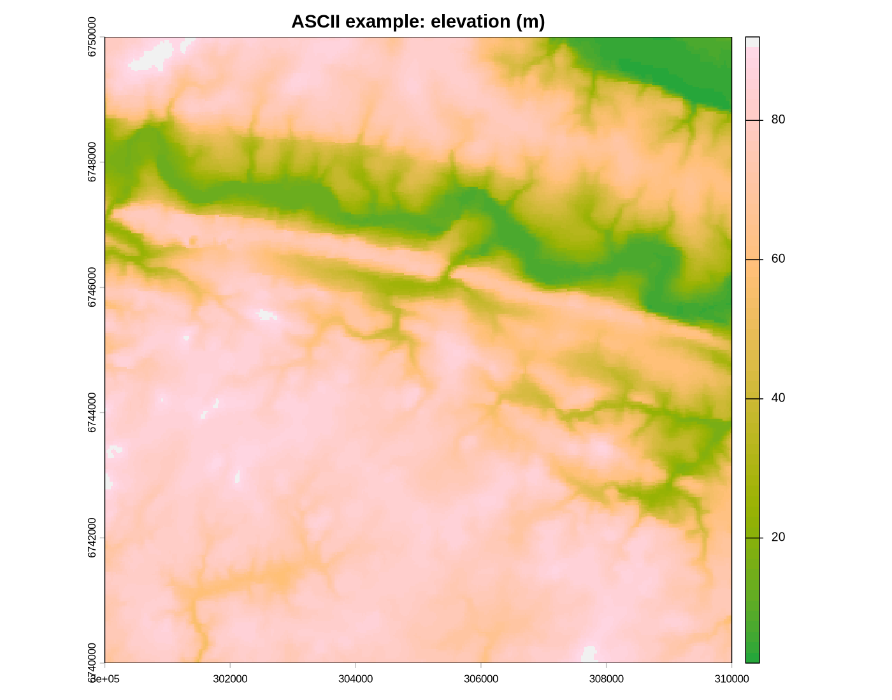
Executed R console output
[1] "ncols 400" "nrows 400" [3] "xllcorner 300000.000000000000" "yllcorner 6740000.000000000000" [5] "cellsize 25.000000000000" "NODATA_value -99999" class : SpatRaster size : 400, 400, 1 (nrow, ncol, nlyr) resolution : 25, 25 (x, y) extent : 300000, 310000, 6740000, 6750000 (xmin, xmax, ymin, ymax) coord. ref. : ETRS89-FRA [RGF93 v1] / Lambert-93 (EPSG:2154) source : bdalti-35-56-ascii-example.asc name : test25 min value : 2.029568 max value : 92 code nom 1 35 Ille-et-Vilaine 2 56 Morbihan
The header describes columns, rows, lower-left location, cell size and the missing-value code. It does not identify the CRS. Assign EPSG:2154 because it is documented in the IGN extraction request; assigning a CRS is not a coordinate transformation. The complete teaching tiles are GeoTIFFs for compact storage; the ASCII example preserves the format-reading exercise. Source: IGN BD ALTI V1 numeric WMS at a requested 25 m grid, not the BD ALTI V2 archive used in the original chapter.
6.2 · Merging: collect tiles, build a collection and mosaic
The 20 numeric IGN extraction tiles cover the two departments with a surrounding margin. Their names describe retrieval tiles, not independent survey areas.
R code
raster_files <- list.files("data/rasters/bdalti-35-56-25m", pattern = "\\.tif$", full.names = TRUE)
stopifnot(length(raster_files) == 20)
rasters <- lapply(raster_files, rast)
stopifnot(all(vapply(rasters, function(x) same.crs(x, dept), logical(1))))
rasters_collection <- sprc(rasters)
dir.create("outputs/module-06/work", recursive = TRUE, showWarnings = FALSE)
merged_raster <- mosaic(rasters_collection, fun = "mean",
filename = "outputs/module-06/work/mosaic25.tif", overwrite = TRUE,
wopt = list(gdal = "COMPRESS=DEFLATE"))
names(merged_raster) <- "elevation"
stopifnot(all(res(merged_raster) == 25))
print(merged_raster)
plot(merged_raster, col = hcl.colors(60, "Terrain"), main = "25 m mosaic: elevation (m)")
lines(dept, col = "white", lwd = 1.2)Why these functions? · official R help
all()— Require every input CRS or cell-resolution check to pass. In R:help("all", package = "base")dir.create()— Create the output directory before exporting rasters. In R:help("dir.create", package = "base")hcl.colors()— Choose perceptually ordered colours for continuous values. In R:help("hcl.colors", package = "grDevices")lapply()— Open each tile with rast() and retain the results in a list. In R:help("lapply", package = "base")length()— Count files or break values to construct complete interval tables. In R:help("length", package = "base")lines()— Draw vector boundaries over a raster map. In R:help("lines", package = "terra")list()— Keep hillshades together under descriptive names. In R:help("list", package = "base")list.files()— Show which exported rasters are available for reuse. In R:help("list.files", package = "base")logical()— Declare the expected logical result of each CRS check. In R:help("logical", package = "base")mosaic()— Combine the 20 aligned numeric extraction tiles into one regional DEM. In R:help("mosaic", package = "terra")names()— Select the individual terrain-index layers by name. In R:help("names", package = "base")plot()— Draw the raster with an explicit legend and units. In R:help("plot", package = "terra")print()— Display numerical output beneath the corresponding code. In R:help("print", package = "base")res()— Inspect the raster cell size in its coordinate units. In R:help("res", package = "terra")same.crs()— Check that raster and vector coordinates refer to the same CRS. In R:help("same.crs", package = "terra")sprc()— Build a SpatRasterCollection from the opened tile list. In R:help("sprc", package = "terra")stopifnot()— Stop execution if a grid or export verification fails. In R:help("stopifnot", package = "base")vapply()— Check every tile CRS with a declared logical return type. In R:help("vapply", package = "base")
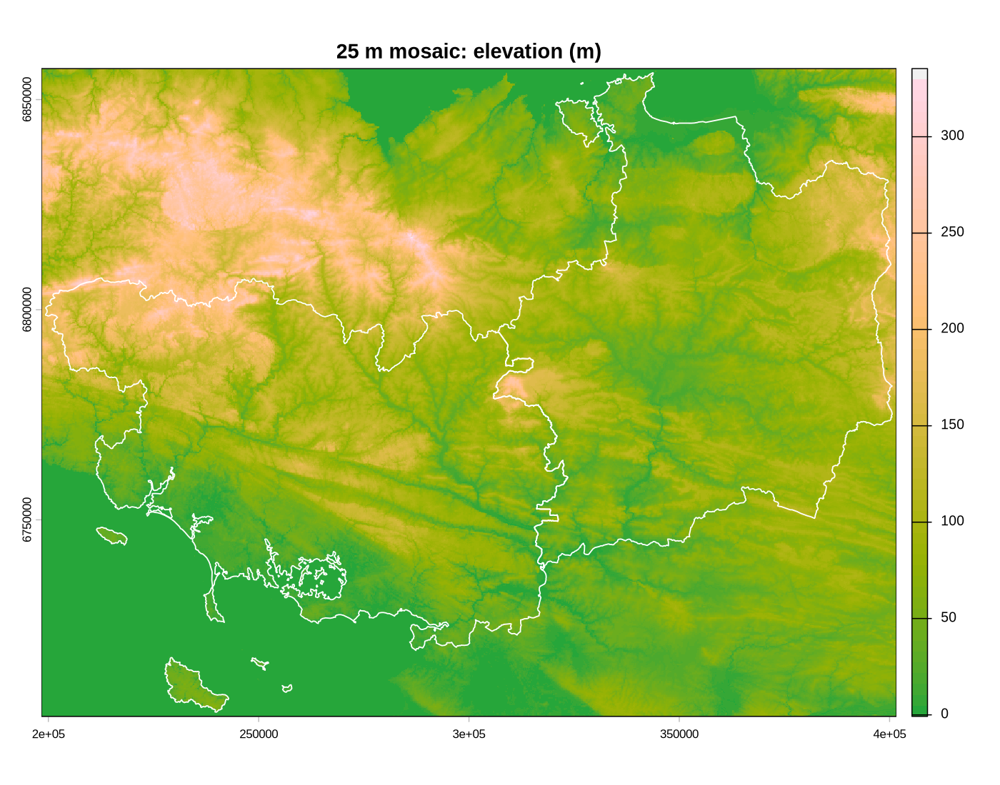
Executed R console output
|---------|---------|---------|---------|
=========================================
class : SpatRaster
size : 6166, 8131, 1 (nrow, ncol, nlyr)
resolution : 25, 25 (x, y)
extent : 198350, 401625, 6703225, 6857375 (xmin, xmax, ymin, ymax)
coord. ref. : ETRS89-FRA [RGF93 v1] / Lambert-93 (EPSG:2154)
source : mosaic25.tif
varname : bdalti25_198350_6703225
name : elevation
min value : -48.860435
max value : 339.968109
lapply() opens each file, sprc() groups the rasters and mosaic() combines them. The inputs already have documented Lambert-93 metadata; no reprojection is needed. The surrounding cells are retained so that later neighbourhood calculations can use terrain beyond the department boundary. Outputs under work/ are generated locally and can be large.
6.3 · Masking, cropping and trimming
Mask both departments, then compare three operations on Morbihan using exactly the same source raster and colour range.
R code
dem <- mask(merged_raster, dept, filename = "outputs/module-06/work/masked25.tif", overwrite = TRUE)
dem <- trim(dem)
dept56 <- dept[dept$code == "56", ]
masks <- list(
Mask = mask(merged_raster, dept56),
Crop = crop(merged_raster, dept56),
Mask_and_trim = trim(mask(merged_raster, dept56))
)
dem56 <- masks$Mask_and_trim
height_range <- as.numeric(global(dem, c("min", "max"), na.rm = TRUE)[1, ])
print(data.frame(operation = names(masks), cells = sapply(masks, ncell)))
for (operation in names(masks)) {
plot(masks[[operation]], col = hcl.colors(60, "Terrain"), range = height_range,
main = paste(operation, "- elevation (m)"))
lines(dept56, col = "black", lwd = 1)
}Why these functions? · official R help
as.numeric()— Convert extent calculations and quantile breaks to numeric values. In R:help("as.numeric", package = "base")c()— Collect options, colours, labels and terrain-index names. In R:help("c", package = "base")crop()— Trim the raster to a rectangle aligned with its cells. In R:help("crop", package = "terra")data.frame()— Present counts and validation results as tables. In R:help("data.frame", package = "base")global()— Summarise raster values and quantify differences between grids. In R:help("global", package = "terra")hcl.colors()— Choose perceptually ordered colours for continuous values. In R:help("hcl.colors", package = "grDevices")lines()— Draw vector boundaries over a raster map. In R:help("lines", package = "terra")list()— Keep hillshades together under descriptive names. In R:help("list", package = "base")mask()— Set cells outside the selected polygon to NA. In R:help("mask", package = "terra")names()— Select the individual terrain-index layers by name. In R:help("names", package = "base")paste()— Build figure titles from the selected method or lighting direction. In R:help("paste", package = "base")plot()— Draw the raster with an explicit legend and units. In R:help("plot", package = "terra")print()— Display numerical output beneath the corresponding code. In R:help("print", package = "base")sapply()— Summarise cells or numerical statistics for each named result. In R:help("sapply", package = "base")trim()— Remove empty outer rows and columns after masking. In R:help("trim", package = "terra")
Mask
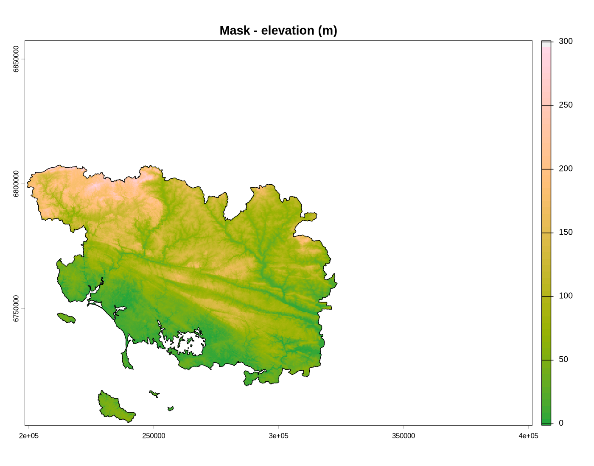
Crop
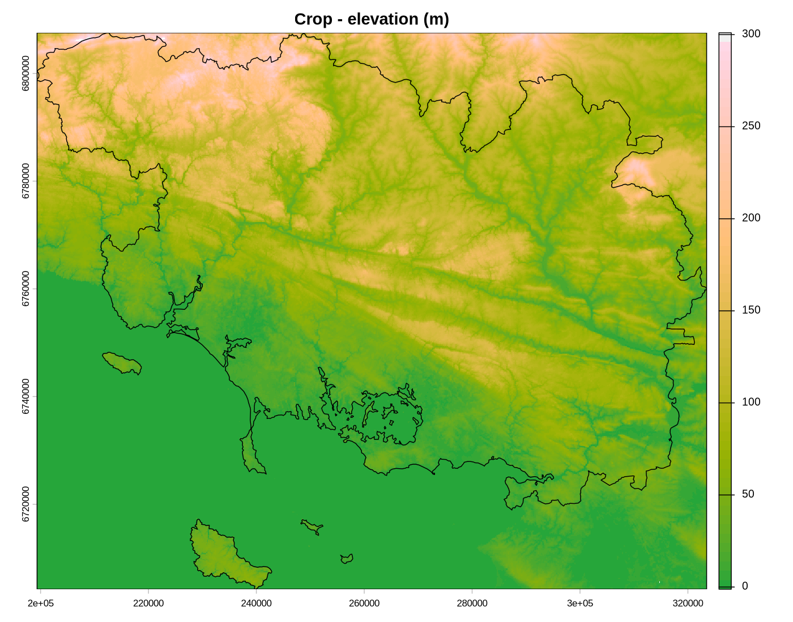
Mask and trim
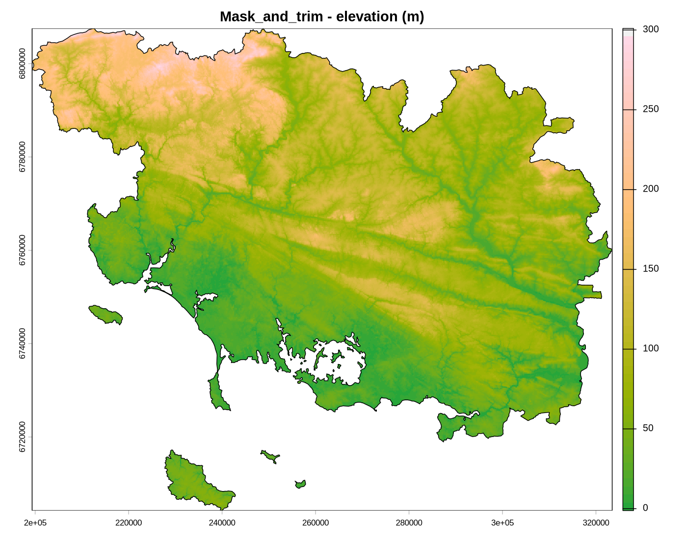
Executed R console output
operation cells Mask Mask 50135746 Crop Crop 20520345 Mask_and_trim Mask_and_trim 20520345
mask() replaces cells outside the polygon with NA but initially retains the source grid extent. crop() reduces the rectangular extent without removing all values outside the polygon. trim() removes empty outer rows and columns. The mask uses generalized department boundaries, so attribution at the coastline is approximate. Different frames here are intentional: extent is precisely what these operations change.
6.4.1 · Colours: relate the map to its elevation distribution
Inspect the Morbihan elevation distribution before choosing class breaks. A linear palette assigns equal colour intervals to equal elevation intervals, regardless of the area they occupy.
R code
z56 <- values(dem56, mat = FALSE)
z56 <- z56[is.finite(z56)]
linear_breaks <- seq(min(z56), max(z56), length.out = 21)
palette <- hcl.colors(20, "Spectral")
plot(dem56, col = palette, main = "Morbihan: linear elevation palette (m)")
lines(dept56)
hist(z56, breaks = linear_breaks, col = palette, xlab = "Elevation (m)",
ylab = "Number of cells", main = "Morbihan elevation: equal-width bins")
print(quantile(z56, probs = c(0, 0.25, 0.5, 0.75, 1)))Why these functions? · official R help
c()— Collect options, colours, labels and terrain-index names. In R:help("c", package = "base")hcl.colors()— Choose perceptually ordered colours for continuous values. In R:help("hcl.colors", package = "grDevices")hist()— Show elevation counts or probability densities with explicit bin boundaries. In R:help("hist", package = "graphics")is.finite()— Exclude missing and non-finite values before computing breaks. In R:help("is.finite", package = "base")lines()— Draw vector boundaries over a raster map. In R:help("lines", package = "terra")max()— Find the highest elevation used to define class limits. In R:help("max", package = "base")min()— Find the lowest elevation used to define class limits. In R:help("min", package = "base")plot()— Draw the raster with an explicit legend and units. In R:help("plot", package = "terra")print()— Display numerical output beneath the corresponding code. In R:help("print", package = "base")quantile()— Calculate elevation thresholds corresponding to specified fractions of cells. In R:help("quantile", package = "stats")seq()— Create equal-width breaks, quantile probabilities or cyclic aspect hues. In R:help("seq", package = "base")values()— Read valid elevation-cell values for exact quantile and histogram calculations. In R:help("values", package = "terra")
Linear map
Elevation histogram
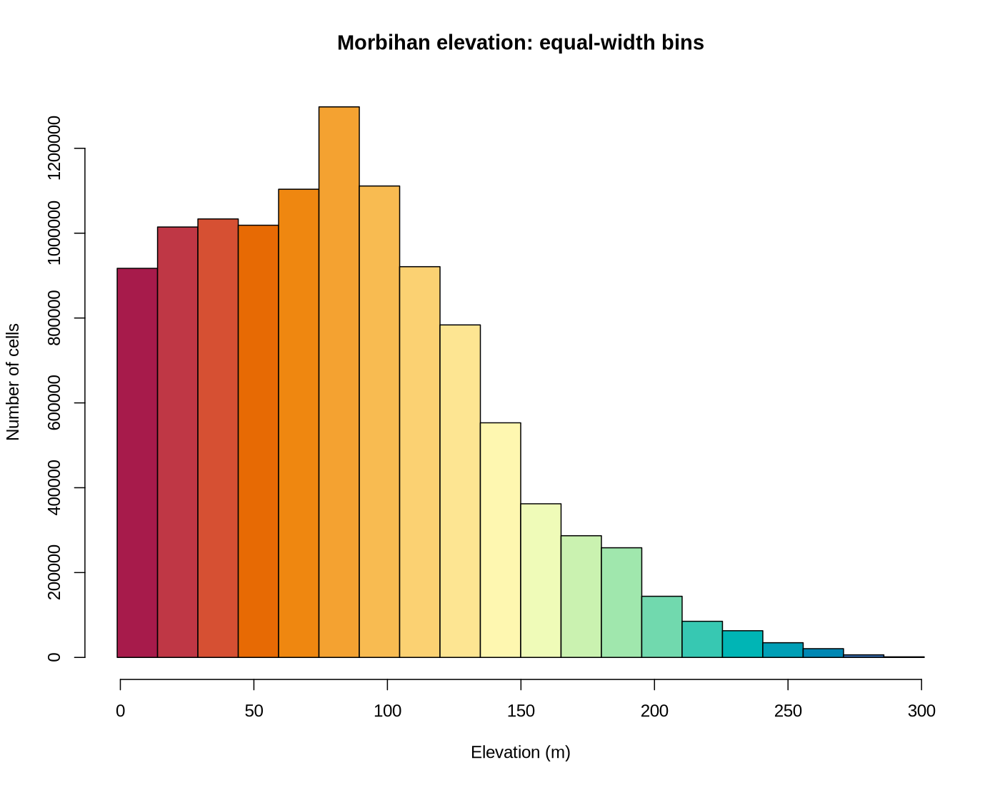
Executed R console output
0% 25% 50% 75% 100% -1.176818 41.070436 79.209602 117.000000 301.000000
A visually underused part of the colour scale can still describe an important elevation range. Read the histogram to see where most cells occur. All cells have the same 25 m × 25 m grid area in Lambert-93, so cell fractions approximate fractions of the mapped area.
6.4.1 · Quantiles: compare equal-width and equal-frequency classes
Compute the 5% elevation quantiles. Do not round the break values: rounding can collapse adjacent classes or exclude the highest cells.
R code
qt <- quantile(z56, probs = seq(0, 1, 0.05))
quantile_breaks <- unique(as.numeric(qt))
stopifnot(length(quantile_breaks) > 2)
print(qt)
for (method in c("Equal width", "Quantiles")) {
bk <- if (method == "Equal width") linear_breaks else quantile_breaks
hist(z56, breaks = bk, probability = TRUE,
col = hcl.colors(length(bk) - 1, "Spectral"),
main = paste(method, "- elevation density"), xlab = "Elevation (m)",
ylab = "Density (1/m)")
abline(v = quantile_breaks, lty = 2, col = "#374b42")
}Why these functions? · official R help
abline()— Mark the quantile boundaries as vertical dashed lines. In R:help("abline", package = "graphics")as.numeric()— Convert extent calculations and quantile breaks to numeric values. In R:help("as.numeric", package = "base")c()— Collect options, colours, labels and terrain-index names. In R:help("c", package = "base")hcl.colors()— Choose perceptually ordered colours for continuous values. In R:help("hcl.colors", package = "grDevices")hist()— Show elevation counts or probability densities with explicit bin boundaries. In R:help("hist", package = "graphics")length()— Count files or break values to construct complete interval tables. In R:help("length", package = "base")paste()— Build figure titles from the selected method or lighting direction. In R:help("paste", package = "base")print()— Display numerical output beneath the corresponding code. In R:help("print", package = "base")quantile()— Calculate elevation thresholds corresponding to specified fractions of cells. In R:help("quantile", package = "stats")seq()— Create equal-width breaks, quantile probabilities or cyclic aspect hues. In R:help("seq", package = "base")stopifnot()— Stop execution if a grid or export verification fails. In R:help("stopifnot", package = "base")unique()— Retrieve each source group name once for the legend. In R:help("unique", package = "base")
Equal-width histogram
Quantile histogram
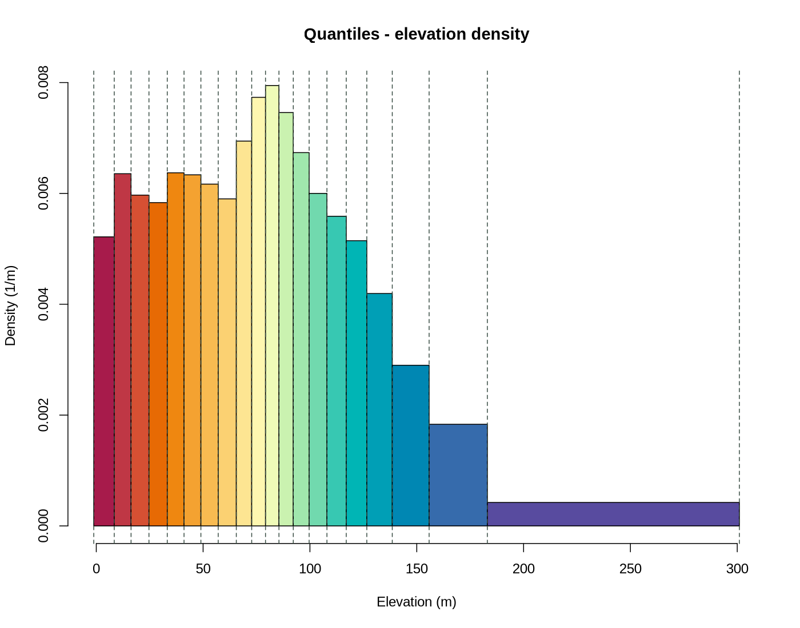
Executed R console output
0% 5% 10% 15% 20% 25% 30%
-1.176818 8.409575 16.277085 24.653076 33.223450 41.070436 48.962910
35% 40% 45% 50% 55% 60% 65%
57.070166 65.543019 72.743916 79.209602 85.501411 92.205040 99.628030
70% 75% 80% 85% 90% 95% 100%
107.961502 117.000000 126.617725 138.538724 155.786191 183.044128 301.000000
In a density histogram with unequal bin widths, bar area represents the fraction of cells; bar height alone does not. Quantile bins have approximately equal probability, except where tied elevation values or merged duplicate breaks prevent exact equality. Dashed lines mark the quantile boundaries.
6.4.1 · Map the quantile-based elevation intervals
Build an explicit colour-interval table, then compare linear and quantile-based colour allocation on the same Morbihan DEM.
R code
colour_table <- data.frame(from = quantile_breaks[-length(quantile_breaks)],
to = quantile_breaks[-1],
color = hcl.colors(length(quantile_breaks) - 1, "Spectral"))
print(colour_table)
plot(dem56, col = hcl.colors(20, "Spectral"), main = "Linear colour scale: elevation (m)")
lines(dept56)
class_matrix <- cbind(colour_table$from, colour_table$to, seq_len(nrow(colour_table)))
colour_classes <- classify(dem56, class_matrix, include.lowest = TRUE)
levels(colour_classes) <- data.frame(ID = seq_len(nrow(colour_table)),
interval = sprintf("%.1f to %.1f m", colour_table$from, colour_table$to))
plot(colour_classes, col = colour_table$color, mar = c(3, 3, 3, 11),
plg = list(cex = 0.7), main = "Quantile intervals: elevation (m)")
lines(dept56)Why these functions? · official R help
c()— Collect options, colours, labels and terrain-index names. In R:help("c", package = "base")cbind()— Assemble the original and display codes for the flow-direction classification. In R:help("cbind", package = "base")classify()— Map D8 powers-of-two codes to labelled categorical display values. In R:help("classify", package = "terra")data.frame()— Present counts and validation results as tables. In R:help("data.frame", package = "base")hcl.colors()— Choose perceptually ordered colours for continuous values. In R:help("hcl.colors", package = "grDevices")length()— Count files or break values to construct complete interval tables. In R:help("length", package = "base")levels()— Attach direction labels to the categorical flow-direction raster. In R:help("levels", package = "terra")lines()— Draw vector boundaries over a raster map. In R:help("lines", package = "terra")list()— Keep hillshades together under descriptive names. In R:help("list", package = "base")nrow()— Count exercise points or output table rows. In R:help("nrow", package = "base")plot()— Draw the raster with an explicit legend and units. In R:help("plot", package = "terra")print()— Display numerical output beneath the corresponding code. In R:help("print", package = "base")seq_len()— Generate consecutive display-class identifiers. In R:help("seq_len", package = "base")sprintf()— Round the printed interval labels without changing the actual quantile thresholds. In R:help("sprintf", package = "base")
Linear colours
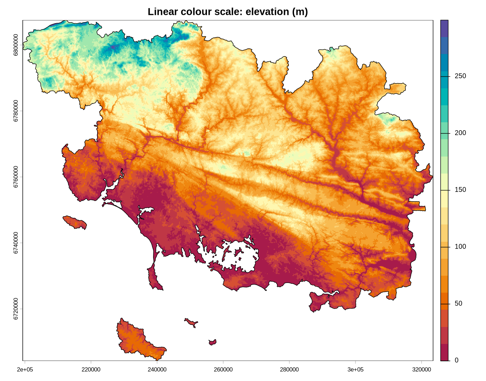
Quantile colours
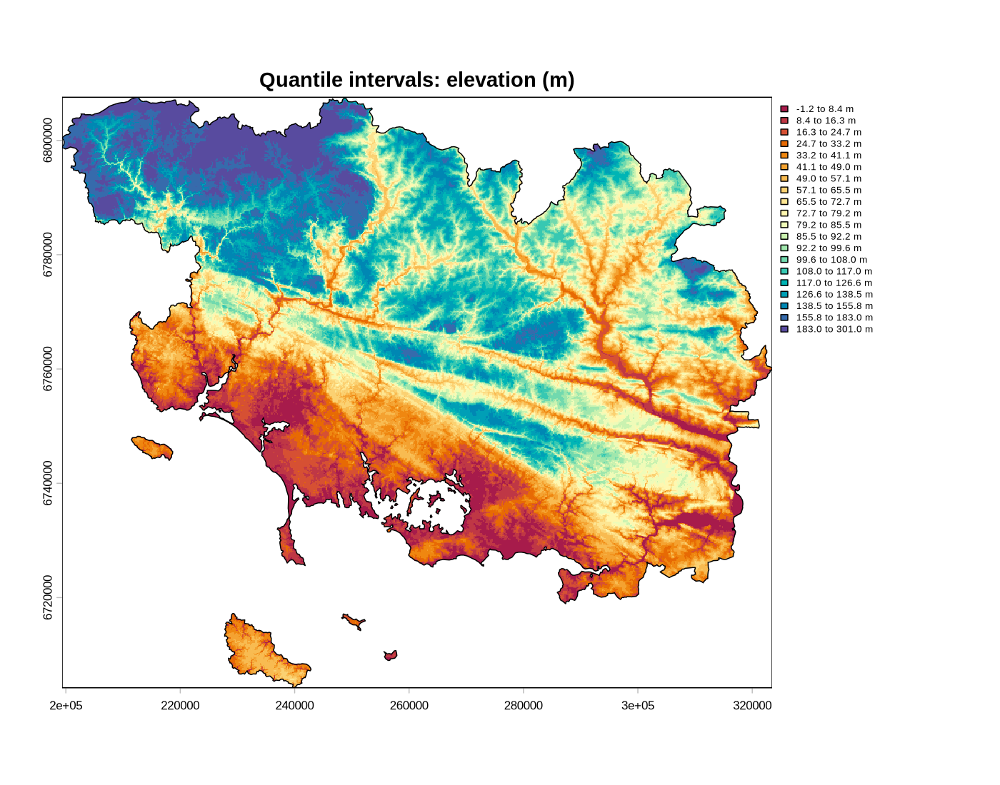
Executed R console output
from to color 1 -1.176818 8.409575 #A71B4B 2 8.409575 16.277085 #BF3745 3 16.277085 24.653076 #D65033 4 24.653076 33.223450 #E76A04 5 33.223450 41.070436 #EF8710 6 41.070436 48.962910 #F4A231 7 48.962910 57.070166 #F8BB51 8 57.070166 65.543019 #FBD172 9 65.543019 72.743916 #FDE592 10 72.743916 79.209602 #FEF7B0 11 79.209602 85.501411 #EFFBB8 12 85.501411 92.205040 #CAF2B0 13 92.205040 99.628030 #A0E7AD 14 99.628030 107.961502 #71D9AE 15 107.961502 117.000000 #37C8B2 16 117.000000 126.617725 #00B5B5 17 126.617725 138.538724 #009FB6 18 138.538724 155.786191 #0087B3 19 155.786191 183.044128 #366BAC 20 183.044128 301.000000 #584B9F
The elevation values have not changed; only their display changes. Quantile colours separate the frequently occurring elevations more finely, while equal-width colours retain a direct linear relationship to height. Do not compare colours across departments unless the same break values are used.
6.4.2 · Shading and a reusable plotting function
Use slope and aspect in radians to derive illumination. For regional display only, aggregate the 25 m grid to 250 m before shading; native-resolution local analysis follows below.
R code
display_dem <- aggregate(dem, fact = 10, fun = "mean", na.rm = TRUE)
a <- terrain(display_dem, v = c("slope", "aspect"), unit = "radians")
sh <- shade(a$slope, a$aspect, angle = 45, direction = 315, normalize = TRUE)
plot(sh, col = gray.colors(100, 0, 1), main = "Regional hillshade: brightness (0-255)")
plot_raster <- function(r, s = r, p = "Viridis", title = "", limits = NULL) {
stopifnot(compareGeom(r, s), p %in% hcl.pals())
a <- terrain(s, v = c("slope", "aspect"), unit = "radians")
sh <- shade(a$slope, a$aspect, angle = 45, direction = 315, normalize = TRUE)
plot(sh, col = gray.colors(100, 0, 1), legend = FALSE, main = title)
plot(r, add = TRUE, alpha = 0.65, col = hcl.colors(100, p), range = limits)
}
plot_raster(display_dem, p = "Terrain", title = "Regional shaded elevation (m), 250 m display")
lines(dept)Why these functions? · official R help
aggregate()— Build a coarser mean-elevation raster for efficient regional display. In R:help("aggregate", package = "terra")c()— Collect options, colours, labels and terrain-index names. In R:help("c", package = "base")compareGeom()— Verify that the reconstructed or exported grid matches the reference. In R:help("compareGeom", package = "terra")gray.colors()— Map simulated illumination to a grayscale from dark to light. In R:help("gray.colors", package = "grDevices")hcl.colors()— Choose perceptually ordered colours for continuous values. In R:help("hcl.colors", package = "grDevices")hcl.pals()— Validate that the chosen palette exists before plotting. In R:help("hcl.pals", package = "grDevices")lines()— Draw vector boundaries over a raster map. In R:help("lines", package = "terra")plot()— Draw the raster with an explicit legend and units. In R:help("plot", package = "terra")plot_raster()— Reuse the shaded plotting routine defined in the shading section; r supplies colours and s supplies terrain shading. Defined in the course; not a terra function.shade()— Model illumination using slope and aspect in radians and light angles in degrees. In R:help("shade", package = "terra")stopifnot()— Stop execution if a grid or export verification fails. In R:help("stopifnot", package = "base")terrain()— Derive slope, aspect and local terrain indices from elevation. In R:help("terrain", package = "terra")
Hillshade
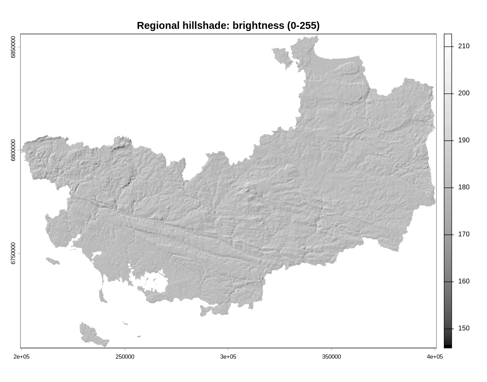
Shaded elevation
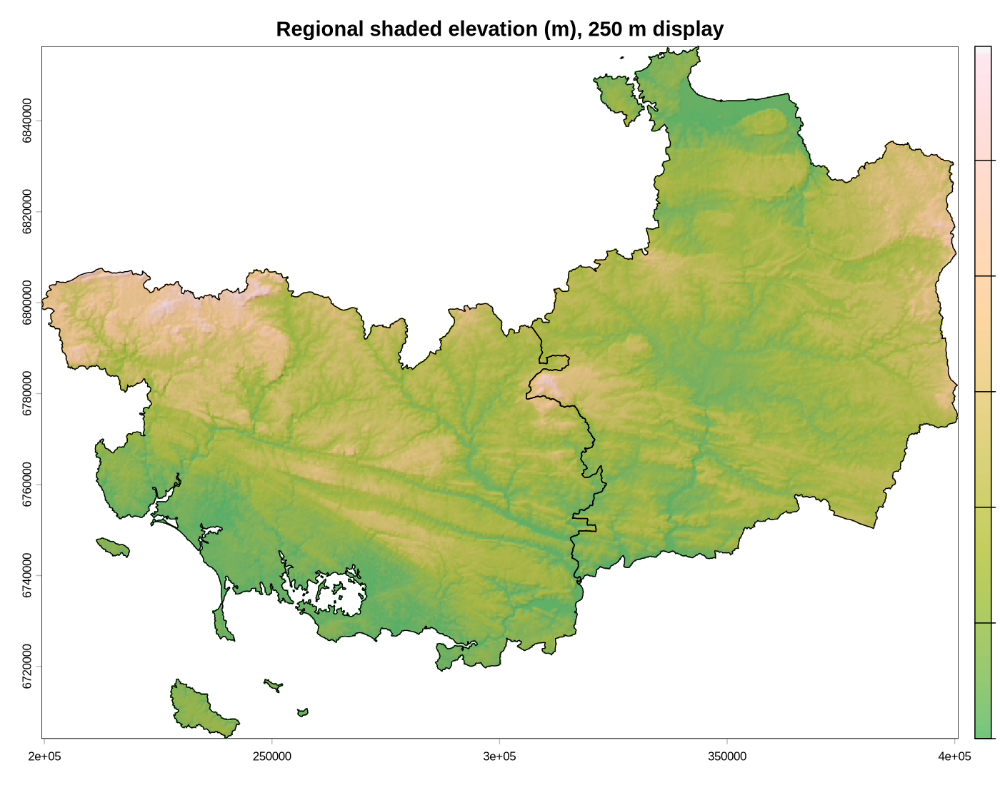
Executed R console output
The helper accepts a raster to colour and a DEM to provide shading; they must share a grid. The 250 m regional view is a display choice for speed, not a substitute for the 25 m local terrain calculations. Brightness is simulated illumination and not an altitude. This helper is defined here, not installed by terra.
6.5 · Resampling: construct an aligned 250 m template
Align the target grid outward to multiples of 250 m. Resample the unmasked mosaic first, then apply the department mask.
R code
target_resolution <- 250
ext_dept <- ext(dept)
ext_resample <- ext(floor(ext_dept[1] / target_resolution) * target_resolution,
ceiling(ext_dept[2] / target_resolution) * target_resolution,
floor(ext_dept[3] / target_resolution) * target_resolution,
ceiling(ext_dept[4] / target_resolution) * target_resolution)
width <- as.numeric(round((ext_resample[2] - ext_resample[1]) / target_resolution))
height <- as.numeric(round((ext_resample[4] - ext_resample[3]) / target_resolution))
template250 <- rast(nrows = height, ncols = width, ext = ext_resample, crs = crs(dept))
print(template250)
coarse <- list(
Nearest = trim(mask(resample(merged_raster, template250, method = "near"), dept)),
Bilinear = trim(mask(resample(merged_raster, template250, method = "bilinear"), dept)),
Mean = trim(mask(resample(merged_raster, template250, method = "average"), dept))
)
dem_resampled <- coarse$Bilinear
for (method in names(coarse)) {
plot(coarse[[method]], col = hcl.colors(60, "Terrain"), range = height_range,
main = paste(method, "resampling: elevation (m), 250 m"))
lines(dept)
}Why these functions? · official R help
as.numeric()— Convert extent calculations and quantile breaks to numeric values. In R:help("as.numeric", package = "base")ceiling()— Align the upper target-grid bounds outward to a multiple of 250 m. In R:help("ceiling", package = "base")crs()— Identify the CRS before interpreting cell dimensions or calculating terrain. In R:help("crs", package = "terra")ext()— Define or read a bounding rectangle in xmin, xmax, ymin, ymax order. In R:help("ext", package = "terra")floor()— Align the lower target-grid bounds outward to a multiple of 250 m. In R:help("floor", package = "base")hcl.colors()— Choose perceptually ordered colours for continuous values. In R:help("hcl.colors", package = "grDevices")lines()— Draw vector boundaries over a raster map. In R:help("lines", package = "terra")list()— Keep hillshades together under descriptive names. In R:help("list", package = "base")mask()— Set cells outside the selected polygon to NA. In R:help("mask", package = "terra")names()— Select the individual terrain-index layers by name. In R:help("names", package = "base")paste()— Build figure titles from the selected method or lighting direction. In R:help("paste", package = "base")plot()— Draw the raster with an explicit legend and units. In R:help("plot", package = "terra")print()— Display numerical output beneath the corresponding code. In R:help("print", package = "base")rast()— Open the numeric elevation tiles or create a target grid with an explicit extent, resolution and CRS. In R:help("rast", package = "terra")resample()— Transfer coarse-grid values to the reference grid with a chosen interpolation rule. In R:help("resample", package = "terra")round()— Calculate integer row counts or snap the local window centre to the 25 m grid. In R:help("round", package = "base")trim()— Remove empty outer rows and columns after masking. In R:help("trim", package = "terra")
Nearest neighbour
Bilinear
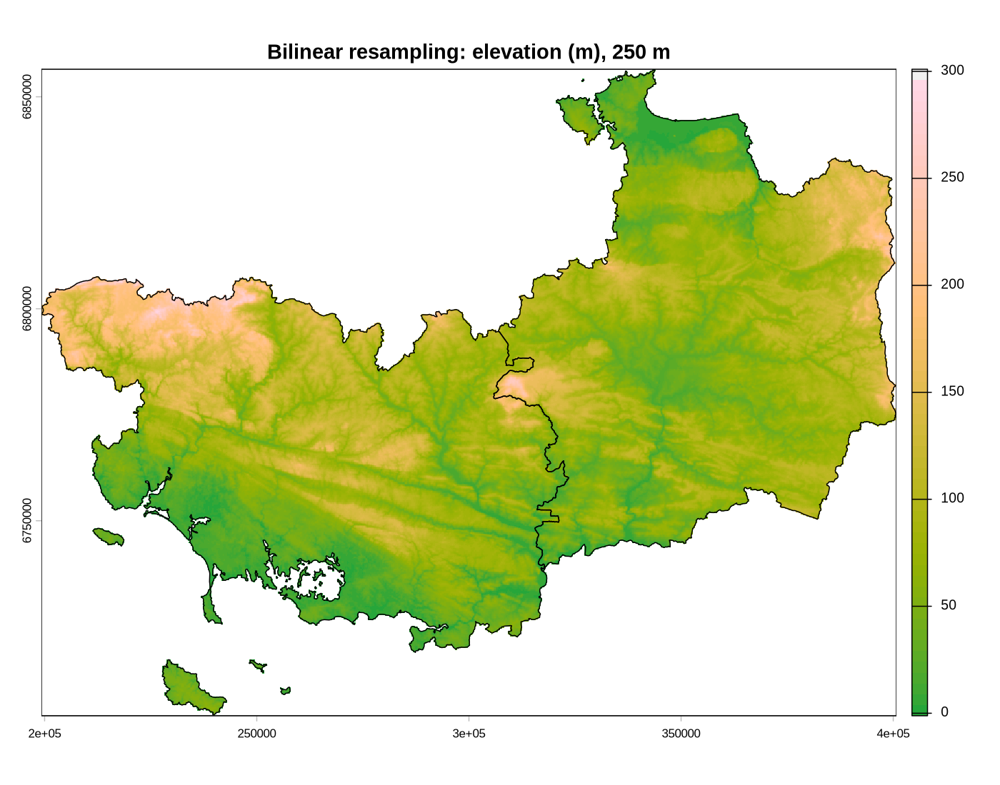
Area-based mean
Executed R console output
class : SpatRaster size : 610, 806, 1 (nrow, ncol, nlyr) resolution : 250, 250 (x, y) extent : 199250, 400750, 6704000, 6856500 (xmin, xmax, ymin, ymax) coord. ref. : ETRS89-FRA [RGF93 v1] / Lambert-93 (EPSG:2154)
Nearest-neighbour selects source values; bilinear interpolates the continuous surface, as in the supplied chapter. An area-based mean is also useful when making a coarser grid because it summarizes contributing cells. The choice depends on the intended meaning of the output. Resampling changes cell support and cannot improve source accuracy.
6.6 · Locate a 10 km terrain-analysis window
Use an inland window near Paimpont and the border of the two departments. Crop the unmasked 25 m mosaic with a halo so neighbour calculations are performed before trimming.
R code
centre <- project(vect(data.frame(lon = -2.20, lat = 48.02),
geom = c("lon", "lat"), crs = "EPSG:4326"), "EPSG:2154")
xy0 <- crds(centre)[1, ]
x0 <- round(xy0[1] / 25) * 25
y0 <- round(xy0[2] / 25) * 25
win <- 10000
ext_subset <- ext(x0 - win / 2, x0 + win / 2, y0 - win / 2, y0 + win / 2)
halo <- ext(x0 - win / 2 - 100, x0 + win / 2 + 100,
y0 - win / 2 - 100, y0 + win / 2 + 100)
local_halo <- crop(merged_raster, halo)
dem2 <- crop(local_halo, ext_subset)
print(dem2)
plot_raster(dem_resampled, p = "Terrain", title = "35 and 56: local window shown in red")
lines(dept)
lines(ext_subset, col = "red", lwd = 2)
plot_raster(dem2, p = "Terrain", title = "10 km local DEM: elevation (m), 25 m grid")Why these functions? · official R help
c()— Collect options, colours, labels and terrain-index names. In R:help("c", package = "base")crds()— Read the projected centre coordinates to construct local extents. In R:help("crds", package = "terra")crop()— Trim the raster to a rectangle aligned with its cells. In R:help("crop", package = "terra")data.frame()— Present counts and validation results as tables. In R:help("data.frame", package = "base")ext()— Define or read a bounding rectangle in xmin, xmax, ymin, ymax order. In R:help("ext", package = "terra")lines()— Draw vector boundaries over a raster map. In R:help("lines", package = "terra")plot_raster()— Reuse the shaded plotting routine defined in the shading section; r supplies colours and s supplies terrain shading. Defined in the course; not a terra function.print()— Display numerical output beneath the corresponding code. In R:help("print", package = "base")project()— Transform the known longitude/latitude study-window centre to Lambert-93. In R:help("project", package = "terra")round()— Calculate integer row counts or snap the local window centre to the 25 m grid. In R:help("round", package = "base")vect()— Read the example boundary polygons. In R:help("vect", package = "terra")
Regional locator
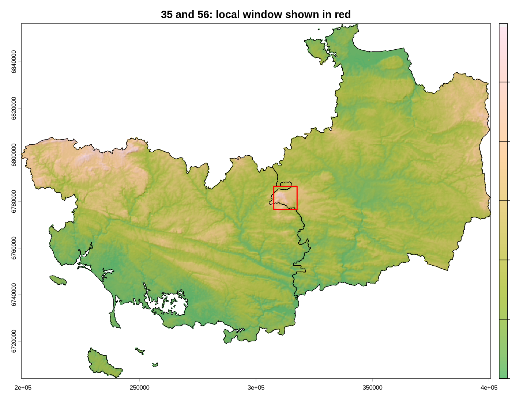
Local 25 m DEM
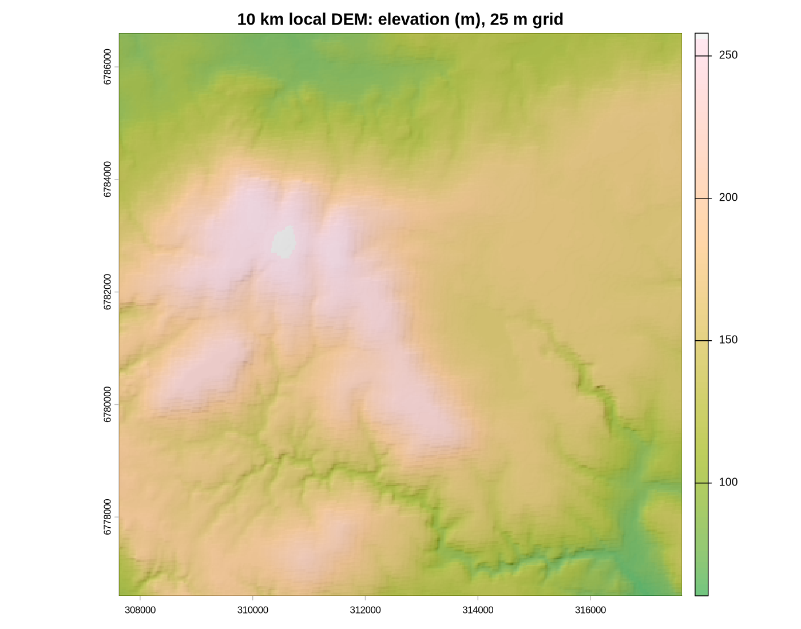
Executed R console output
class : SpatRaster size : 400, 400, 1 (nrow, ncol, nlyr) resolution : 25, 25 (x, y) extent : 307625, 317625, 6776600, 6786600 (xmin, xmax, ymin, ymax) coord. ref. : ETRS89-FRA [RGF93 v1] / Lambert-93 (EPSG:2154) source(s) : memory varname : bdalti25_198350_6703225 name : elevation min value : 60.387489 max value : 258
The regional locator and local view are different scales. The red rectangle locates the analysis window. A halo supplies neighbouring cells for the derivatives and reduces artificial edge effects at the final map frame.
6.6 · Terrain: slope, aspect, flow direction, TRI and roughness
Compute all terrain properties from the 25 m halo DEM and crop each result to the common 10 km analysis window.
R code
terrain_maps <- list(
Slope = crop(terrain(local_halo, "slope", unit = "degrees"), ext_subset),
Aspect = crop(terrain(local_halo, "aspect", unit = "degrees"), ext_subset),
Flow_direction = crop(terrain(local_halo, "flowdir"), ext_subset),
TRI_Riley = crop(terrain(local_halo, "TRIriley"), ext_subset),
Roughness = crop(terrain(local_halo, "roughness"), ext_subset)
)
print(sapply(terrain_maps[c("Slope", "TRI_Riley", "Roughness")],
function(x) global(x, "mean", na.rm = TRUE)[1, 1]))
print(freq(terrain_maps$Flow_direction))
for (property in names(terrain_maps)) {
x <- terrain_maps[[property]]
if (property == "Aspect") {
x <- ifel(terrain_maps$Slope == 0, NA, x)
plot(x, col = hsv(seq(0, 1, length.out = 61)), range = c(0, 360),
main = "Aspect: clockwise from north (degrees)")
} else if (property == "Flow_direction") {
flow <- classify(x, cbind(c(0, 1, 2, 4, 8, 16, 32, 64, 128), 1:9))
levels(flow) <- data.frame(ID = 1:9,
direction = c("No lower neighbour", "E", "SE", "S", "SW", "W", "NW", "N", "NE"))
plot(flow, col = hcl.colors(9, "Dark 3"), main = "D8 flow direction: categorical")
} else {
units <- if (property == "Slope") "degrees" else "m"
plot_raster(x, dem2, p = "Plasma", title = paste(property, "(", units, ")"))
}
}Why these functions? · official R help
c()— Collect options, colours, labels and terrain-index names. In R:help("c", package = "base")cbind()— Assemble the original and display codes for the flow-direction classification. In R:help("cbind", package = "base")classify()— Map D8 powers-of-two codes to labelled categorical display values. In R:help("classify", package = "terra")crop()— Trim the raster to a rectangle aligned with its cells. In R:help("crop", package = "terra")data.frame()— Present counts and validation results as tables. In R:help("data.frame", package = "base")freq()— Count the cells in each D8 category; these codes must not be averaged. In R:help("freq", package = "terra")global()— Summarise raster values and quantify differences between grids. In R:help("global", package = "terra")hcl.colors()— Choose perceptually ordered colours for continuous values. In R:help("hcl.colors", package = "grDevices")hsv()— Create a cyclic colour scale for aspect: north repeats at 0 and 360 degrees. In R:help("hsv", package = "grDevices")ifel()— Hide aspect values where slope is exactly zero. In R:help("ifel", package = "terra")levels()— Attach direction labels to the categorical flow-direction raster. In R:help("levels", package = "terra")list()— Keep hillshades together under descriptive names. In R:help("list", package = "base")names()— Select the individual terrain-index layers by name. In R:help("names", package = "base")paste()— Build figure titles from the selected method or lighting direction. In R:help("paste", package = "base")plot()— Draw the raster with an explicit legend and units. In R:help("plot", package = "terra")plot_raster()— Reuse the shaded plotting routine defined in the shading section; r supplies colours and s supplies terrain shading. Defined in the course; not a terra function.print()— Display numerical output beneath the corresponding code. In R:help("print", package = "base")sapply()— Summarise cells or numerical statistics for each named result. In R:help("sapply", package = "base")seq()— Create equal-width breaks, quantile probabilities or cyclic aspect hues. In R:help("seq", package = "base")terrain()— Derive slope, aspect and local terrain indices from elevation. In R:help("terrain", package = "terra")
Slope
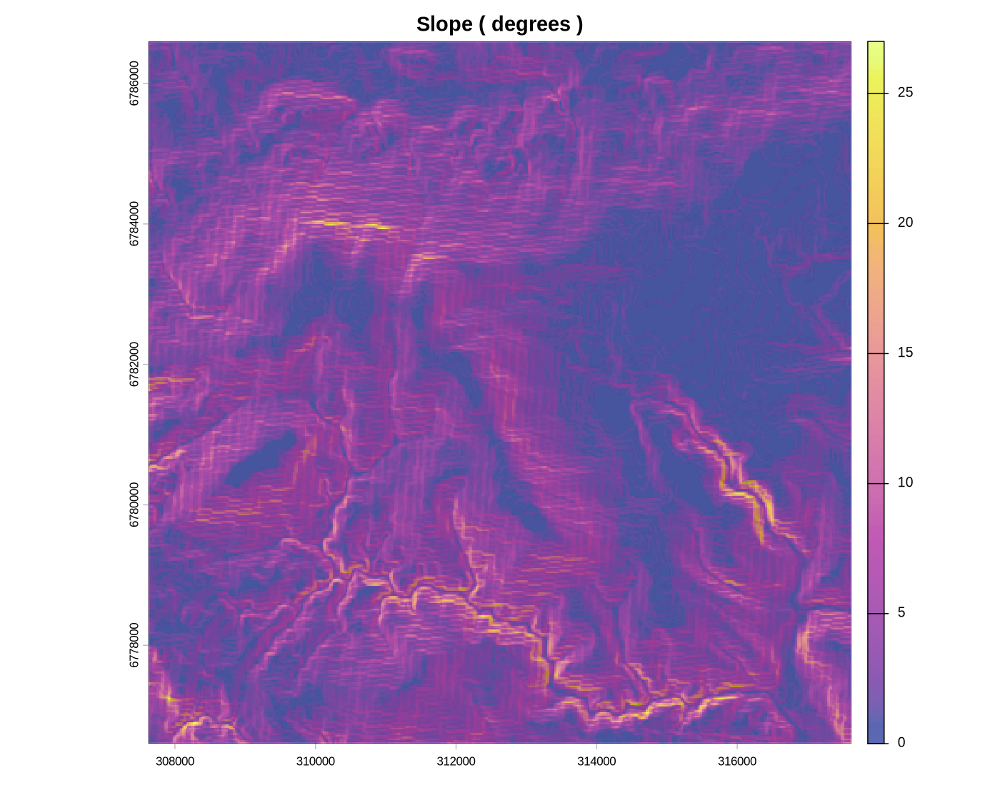
Aspect
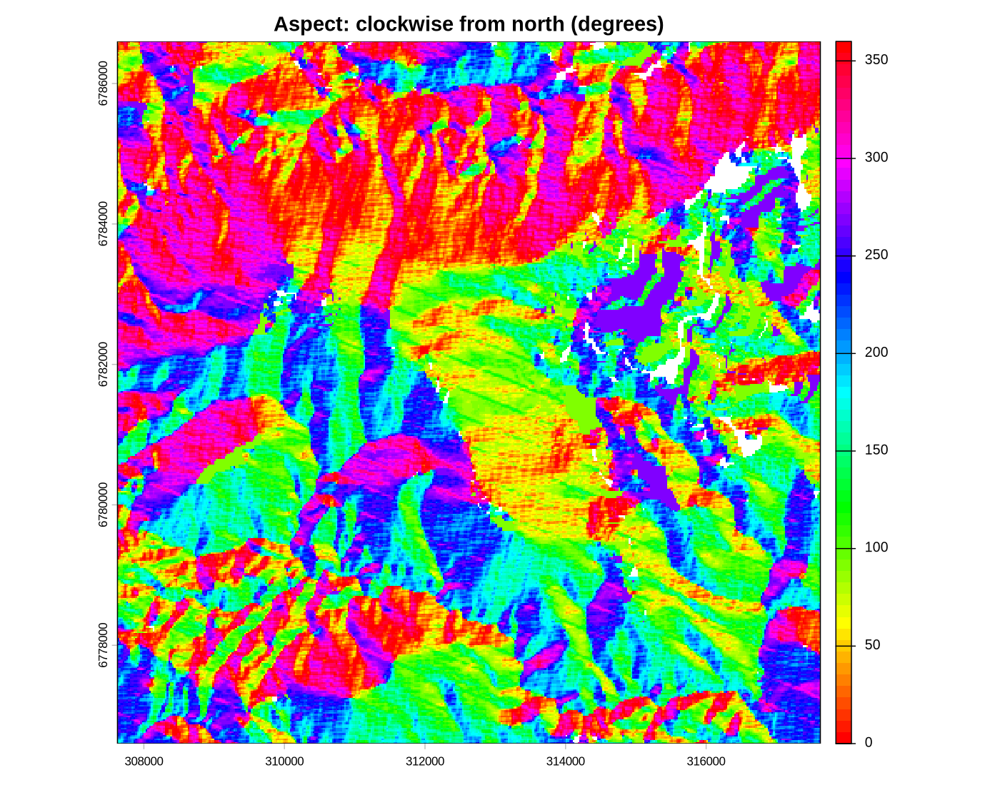
Flow direction
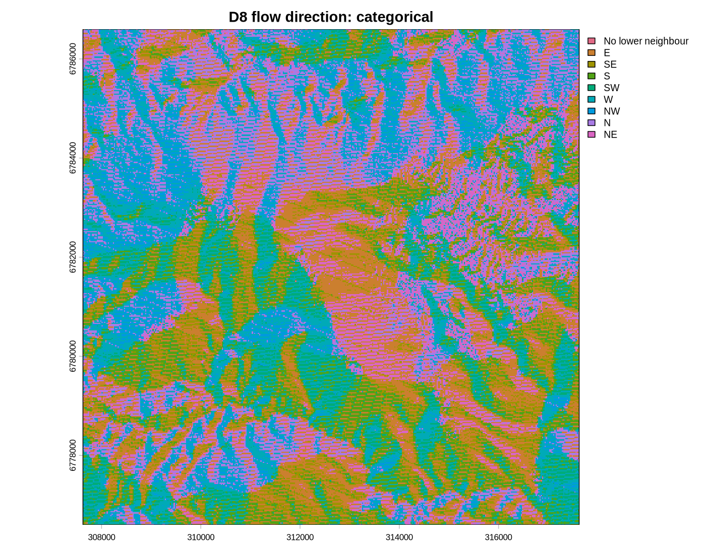
Riley TRI
Roughness
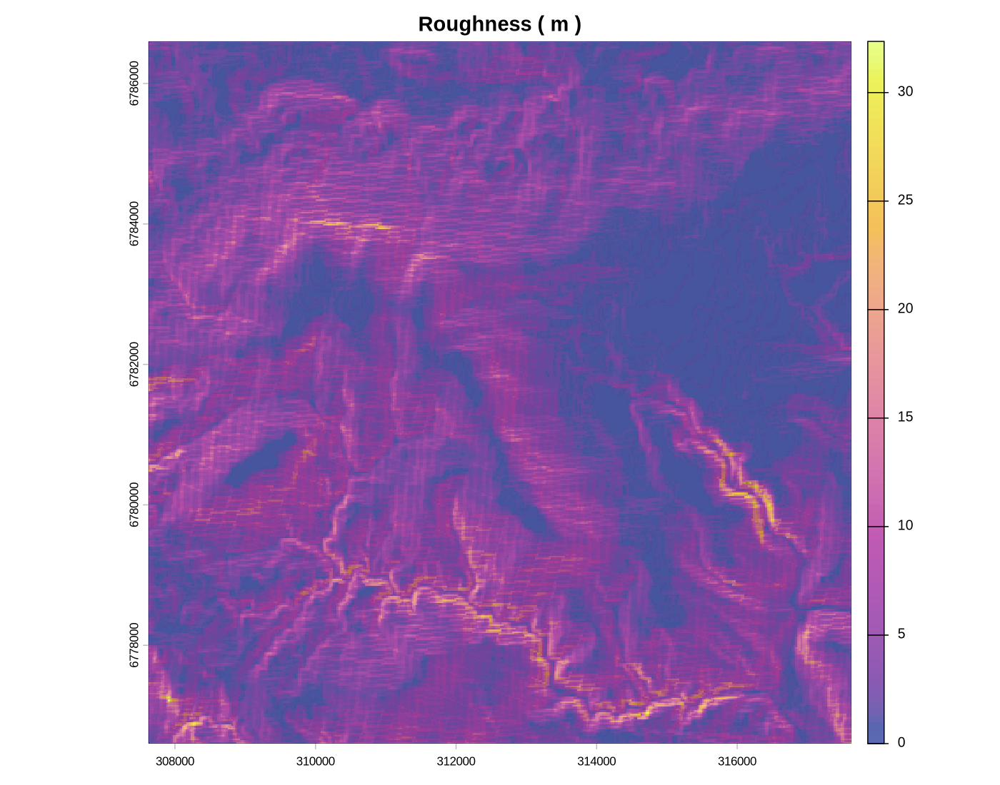
Executed R console output
Slope TRI_Riley Roughness 3.325433 4.254269 3.805618 layer value count 1 1 0 1375 2 1 1 31289 3 1 2 12507 4 1 4 18937 5 1 8 10630 6 1 16 27763 7 1 32 14952 8 1 64 24569 9 1 128 17978
Slope is in degrees; aspect is a circular direction and is hidden on exactly flat cells. D8 flow direction is a category encoded by powers of two, not a continuous quantity. It is a local steepest-descent result, not a validated drainage network; depressions and flat areas require additional hydrological processing. Riley TRI is the square root of summed squared neighbour elevation differences; roughness is neighbourhood maximum minus minimum.
6.7 · Interpolation: construct irregular exercise points and a 10 m template
Extract reproducible random point samples from a 6 km square of the local DEM. Use a smaller central 5 km interpolation grid to reduce edge extrapolation.
R code
point_source <- crop(merged_raster, ext(x0 - 3000, x0 + 3000, y0 - 3000, y0 + 3000))
set.seed(356)
elev <- spatSample(point_source, size = 1600, method = "random", na.rm = TRUE, as.points = TRUE)
names(elev) <- "z"
target_resolution <- 10
ext_elev <- ext(x0 - 2500, x0 + 2500, y0 - 2500, y0 + 2500)
r <- rast(ext = ext_elev, resolution = target_resolution, crs = crs(elev))
ext_zoom <- ext(x0 - 1000, x0 + 1000, y0 - 1000, y0 + 1000)
print(r)
print(nrow(elev))
plot(elev, "z", type = "continuous", cex = 0.35, main = "DEM-derived exercise points: elevation (m)")
lines(ext_elev, lwd = 2)
lines(ext_zoom, col = "red", lwd = 2)
add_legend("topright", legend = c("Interpolation extent", "Zoom extent"),
col = c("black", "red"), lty = 1, lwd = 2, cex = 0.7, bty = "n")Why these functions? · official R help
add_legend()— Explain the black interpolation-domain and red zoom-domain outlines. In R:help("add_legend", package = "terra")c()— Collect options, colours, labels and terrain-index names. In R:help("c", package = "base")crop()— Trim the raster to a rectangle aligned with its cells. In R:help("crop", package = "terra")crs()— Identify the CRS before interpreting cell dimensions or calculating terrain. In R:help("crs", package = "terra")ext()— Define or read a bounding rectangle in xmin, xmax, ymin, ymax order. In R:help("ext", package = "terra")lines()— Draw vector boundaries over a raster map. In R:help("lines", package = "terra")names()— Select the individual terrain-index layers by name. In R:help("names", package = "base")nrow()— Count exercise points or output table rows. In R:help("nrow", package = "base")plot()— Draw the raster with an explicit legend and units. In R:help("plot", package = "terra")print()— Display numerical output beneath the corresponding code. In R:help("print", package = "base")rast()— Open the numeric elevation tiles or create a target grid with an explicit extent, resolution and CRS. In R:help("rast", package = "terra")set.seed()— Make the random exercise-point sample reproducible. In R:help("set.seed", package = "base")spatSample()— Extract irregular exercise points from the local elevation raster. In R:help("spatSample", package = "terra")
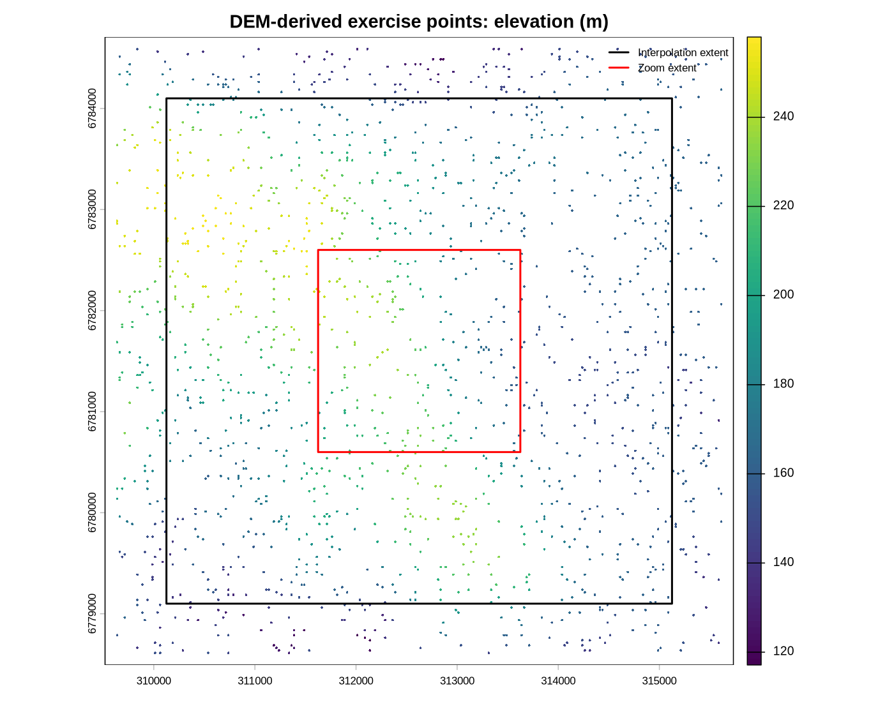
Executed R console output
class : SpatRaster size : 500, 500, 1 (nrow, ncol, nlyr) resolution : 10, 10 (x, y) extent : 310125, 315125, 6779100, 6784100 (xmin, xmax, ymin, ymax) coord. ref. : ETRS89-FRA [RGF93 v1] / Lambert-93 (EPSG:2154) [1] 1600
These z values come from the IGN raster: they are not independent field measurements. The empty target grid has 10 m cells, but its source information is still limited by the 25 m DEM and sampling. The black and red rectangles show the interpolation domain and close-up domain.
6.7 · Compare IDW, nearest neighbour, moving window and linear TIN
Use the same input points and 10 m template for all four methods. A 400 m search radius keeps the local methods comparable.
R code
interpolations <- list(
IDW = interpIDW(r, elev, "z", radius = 400, power = 2, maxPoints = 12, minPoints = 3),
Nearest = interpNear(r, elev, "z", radius = 400),
Moving_window = rasterizeWin(elev, r, "z", win = "circle", pars = 400, fun = "mean", minPoints = 3),
TIN = interpNear(r, elev, "z", radius = 0, interpolate = TRUE)
)
interpolation_limits <- range(elev$z)
for (method in names(interpolations)) {
plot(interpolations[[method]], col = hcl.colors(60, "Terrain"), range = interpolation_limits,
main = paste(method, "interpolation: elevation (m)"))
lines(ext_zoom, lty = 2, col = "black")
}
print(sapply(interpolations, function(x) global(!is.na(x), "sum")[1, 1]))Why these functions? · official R help
global()— Summarise raster values and quantify differences between grids. In R:help("global", package = "terra")hcl.colors()— Choose perceptually ordered colours for continuous values. In R:help("hcl.colors", package = "grDevices")interpIDW()— Interpolate point elevations using inverse-distance weights within 400 m. In R:help("interpIDW", package = "terra")interpNear()— Choose nearest-point elevations, or use linear Delaunay-triangle interpolation when interpolate = TRUE. In R:help("interpNear", package = "terra")is.na()— Identify missing cells or exclude missing elevations from summaries. In R:help("is.na", package = "base")lines()— Draw vector boundaries over a raster map. In R:help("lines", package = "terra")list()— Keep hillshades together under descriptive names. In R:help("list", package = "base")names()— Select the individual terrain-index layers by name. In R:help("names", package = "base")paste()— Build figure titles from the selected method or lighting direction. In R:help("paste", package = "base")plot()— Draw the raster with an explicit legend and units. In R:help("plot", package = "terra")print()— Display numerical output beneath the corresponding code. In R:help("print", package = "base")range()— Use identical minimum and maximum elevation colours across interpolation maps. In R:help("range", package = "base")rasterizeWin()— Average the point elevations within a circular 400 m window. In R:help("rasterizeWin", package = "terra")sapply()— Summarise cells or numerical statistics for each named result. In R:help("sapply", package = "base")
IDW
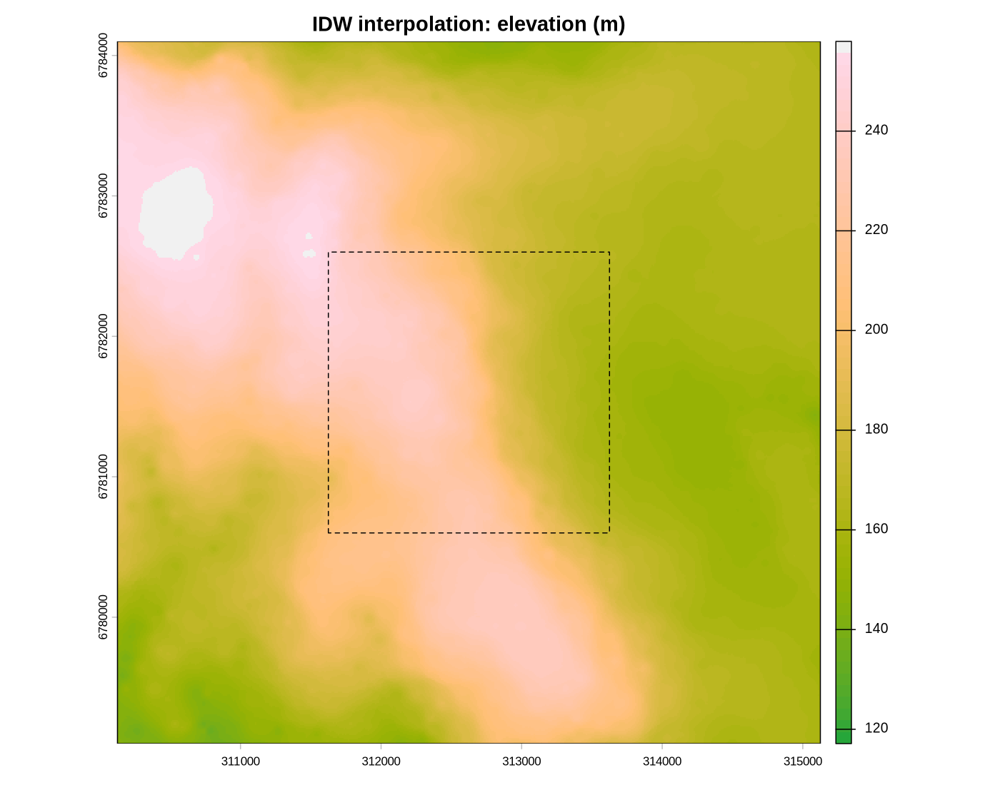
Nearest neighbour
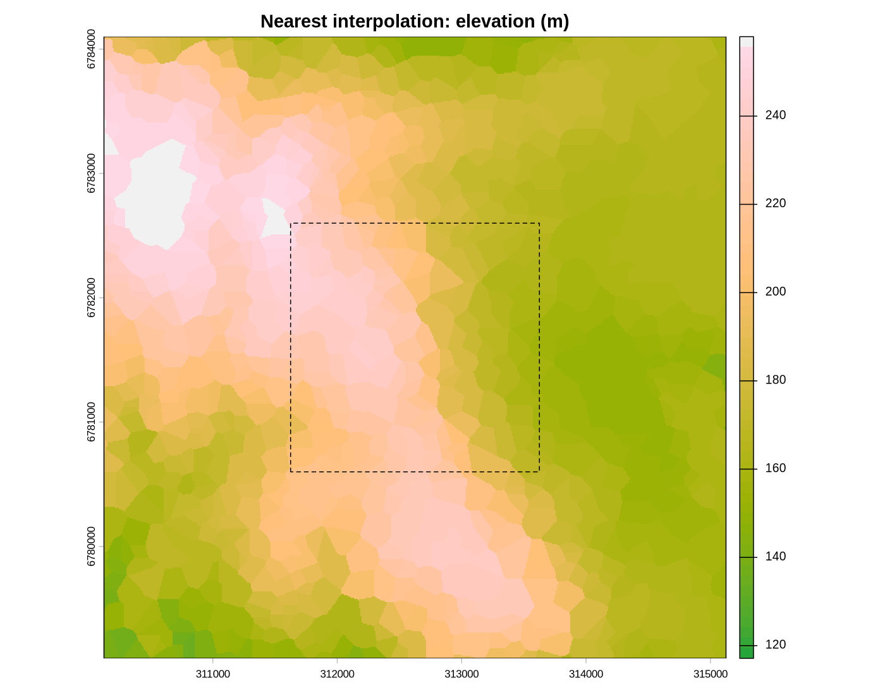
Moving window
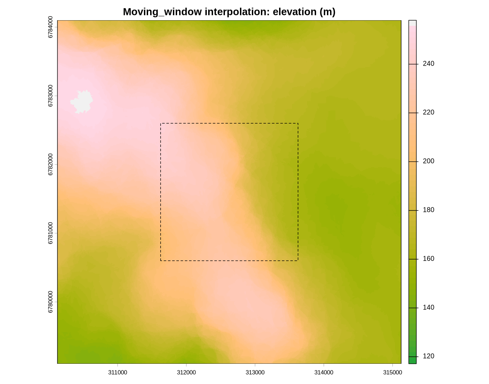
Linear TIN
Executed R console output
IDW Nearest Moving_window TIN
250000 250000 250000 250000
IDW weights closer observations more strongly. Nearest-neighbour produces zones of constant elevation. The moving window averages all qualifying points within 400 m. For TIN, interpNear(interpolate = TRUE) invokes linear interpolation on Delaunay triangles; radius = 0 prevents nearest-point filling beyond the triangulated domain. Empty search neighbourhoods can remain NA. Shared colours and limits make the surfaces comparable.
6.7 · Inspect a shared close-up
Crop each interpolation to the same 2 km central window and use the same colour limits. Observe surface texture without changing the input points or model settings.
R code
for (method in names(interpolations)) {
closeup <- crop(interpolations[[method]], ext_zoom)
plot(closeup, col = hcl.colors(60, "Terrain"), range = interpolation_limits,
main = paste(method, "close-up: elevation (m)"))
}Why these functions? · official R help
crop()— Trim the raster to a rectangle aligned with its cells. In R:help("crop", package = "terra")hcl.colors()— Choose perceptually ordered colours for continuous values. In R:help("hcl.colors", package = "grDevices")names()— Select the individual terrain-index layers by name. In R:help("names", package = "base")paste()— Build figure titles from the selected method or lighting direction. In R:help("paste", package = "base")plot()— Draw the raster with an explicit legend and units. In R:help("plot", package = "terra")
IDW close-up
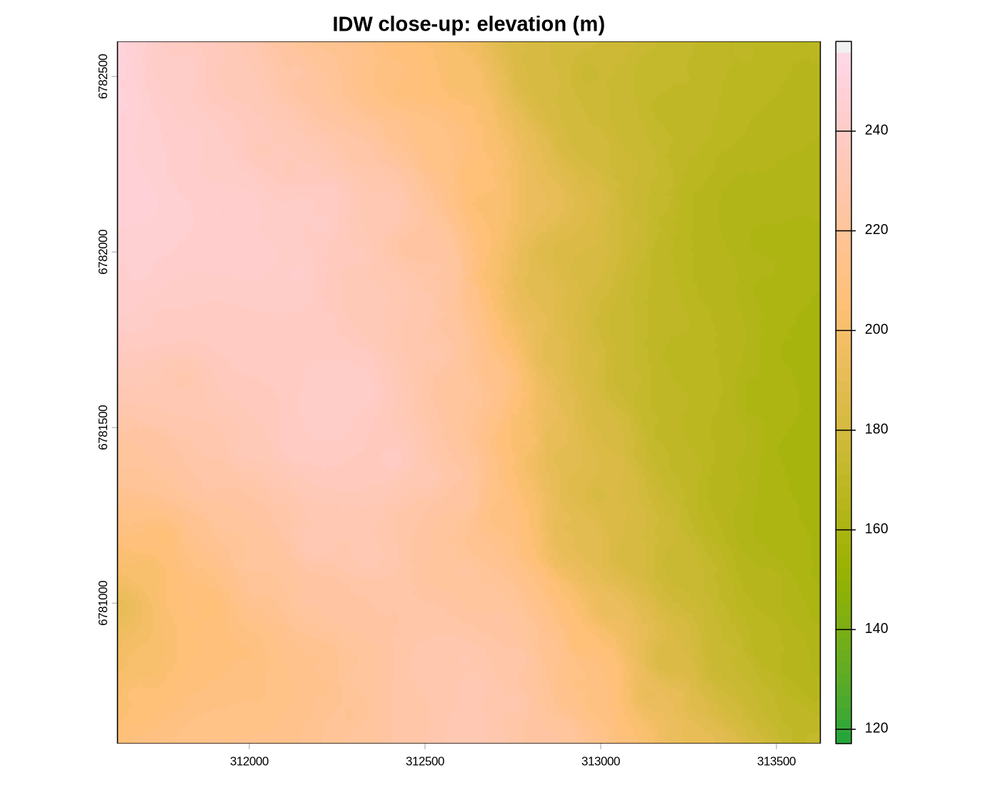
Nearest close-up
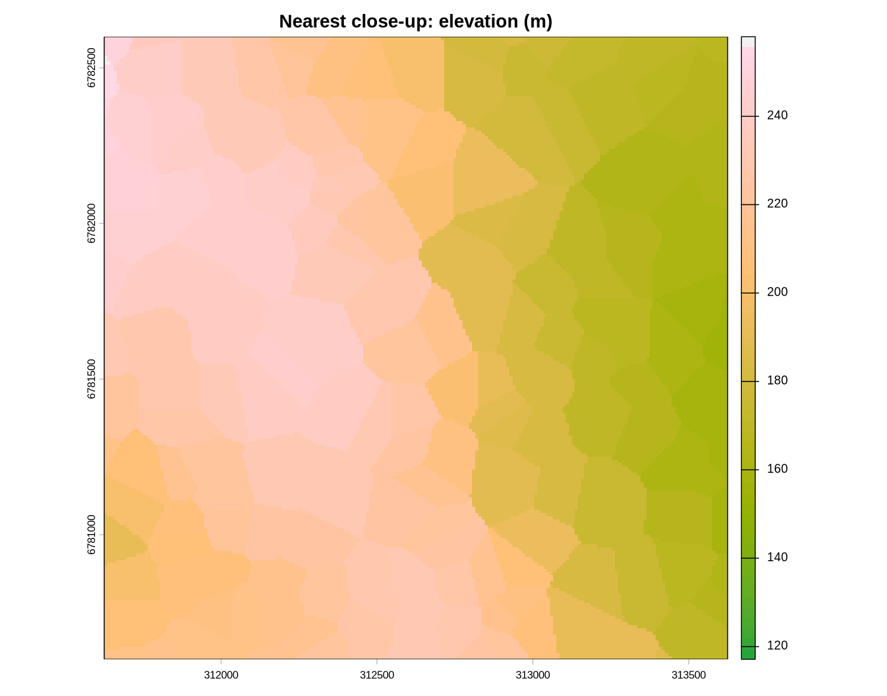
Window close-up
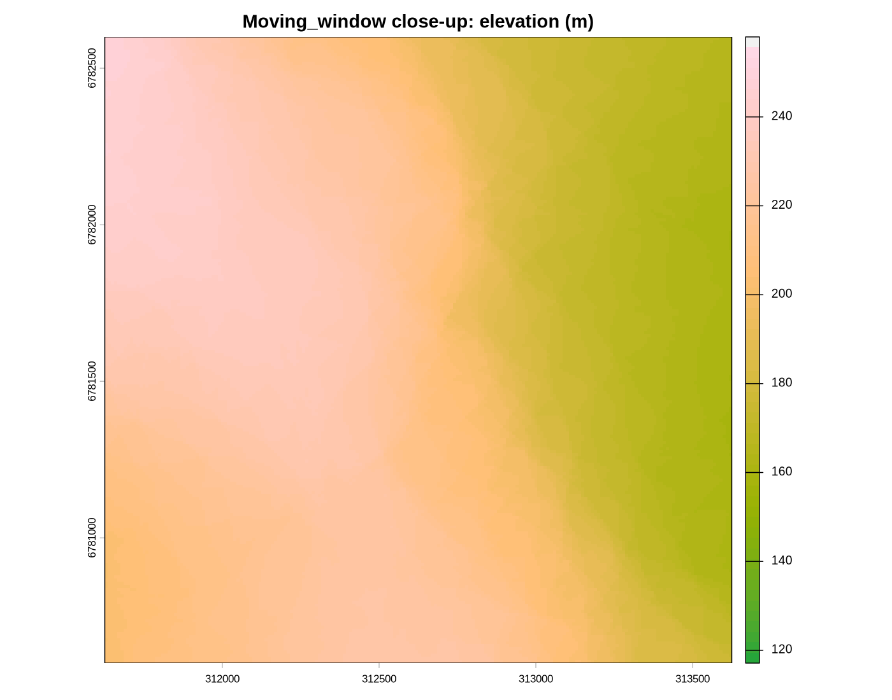
TIN close-up
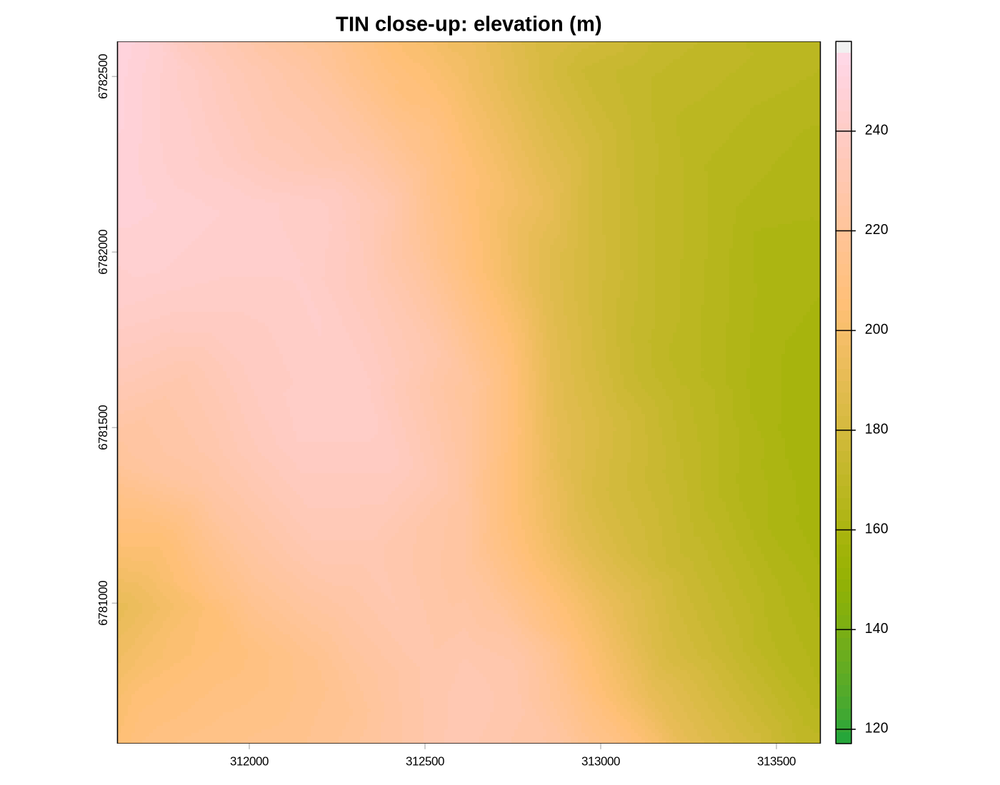
Executed R console output
The block pattern of nearest-neighbour, the smoothing of the window mean and the planar facets of linear TIN are consequences of the interpolation models. A visually smooth surface does not necessarily give the best numerical reconstruction.
6.7 · Compare the reconstructed surfaces to their source DEM
Resample the source DEM onto the interpolation template, then calculate differences on cells where all four methods have values.
R code
reference <- resample(point_source, r, method = "bilinear")
all_maps <- c(rast(interpolations), reference)
common <- app(is.na(all_maps), sum) == 0
scores <- data.frame(method = names(interpolations), RMSE_m = NA_real_, MAE_m = NA_real_)
for (i in seq_along(interpolations)) {
difference <- mask(interpolations[[i]] - reference, common, maskvalues = 0)
scores$RMSE_m[i] <- sqrt(global(difference^2, "mean", na.rm = TRUE)[1, 1])
scores$MAE_m[i] <- global(abs(difference), "mean", na.rm = TRUE)[1, 1]
}
print(scores)
comparison_values <- as.data.frame(rast(interpolations), na.rm = TRUE)
boxplot(comparison_values, col = c("#78a76a", "#e6a367", "#8d9ed0", "#c68ca9"),
ylab = "Interpolated elevation (m)", main = "Interpolated elevation distributions", ylim = c(120, 280))
legend("topright", legend = names(interpolations),
fill = c("#78a76a", "#e6a367", "#8d9ed0", "#c68ca9"), cex = 0.7, bty = "n")Why these functions? · official R help
abs()— Turn signed differences into absolute differences for error checks. In R:help("abs", package = "base")app()— Combine the missing-value layers to identify cells valid for every comparison. In R:help("app", package = "terra")as.data.frame()— Inspect attributes or build the output-distribution comparison table. In R:help("as.data.frame", package = "base")boxplot()— Compare elevation distributions with median, quartiles, whiskers and outliers. In R:help("boxplot", package = "graphics")c()— Collect options, colours, labels and terrain-index names. In R:help("c", package = "base")data.frame()— Present counts and validation results as tables. In R:help("data.frame", package = "base")global()— Summarise raster values and quantify differences between grids. In R:help("global", package = "terra")is.na()— Identify missing cells or exclude missing elevations from summaries. In R:help("is.na", package = "base")legend()— Explain the boxplot colours using the same group labels. In R:help("legend", package = "graphics")mask()— Set cells outside the selected polygon to NA. In R:help("mask", package = "terra")names()— Select the individual terrain-index layers by name. In R:help("names", package = "base")print()— Display numerical output beneath the corresponding code. In R:help("print", package = "base")rast()— Open the numeric elevation tiles or create a target grid with an explicit extent, resolution and CRS. In R:help("rast", package = "terra")resample()— Transfer coarse-grid values to the reference grid with a chosen interpolation rule. In R:help("resample", package = "terra")seq_along()— Visit each interpolation method in a stable order. In R:help("seq_along", package = "base")sqrt()— Convert mean squared reconstruction differences into RMSE in metres. In R:help("sqrt", package = "base")sum()— Count missing layers at each cell to define a common comparison support. In R:help("sum", package = "base")
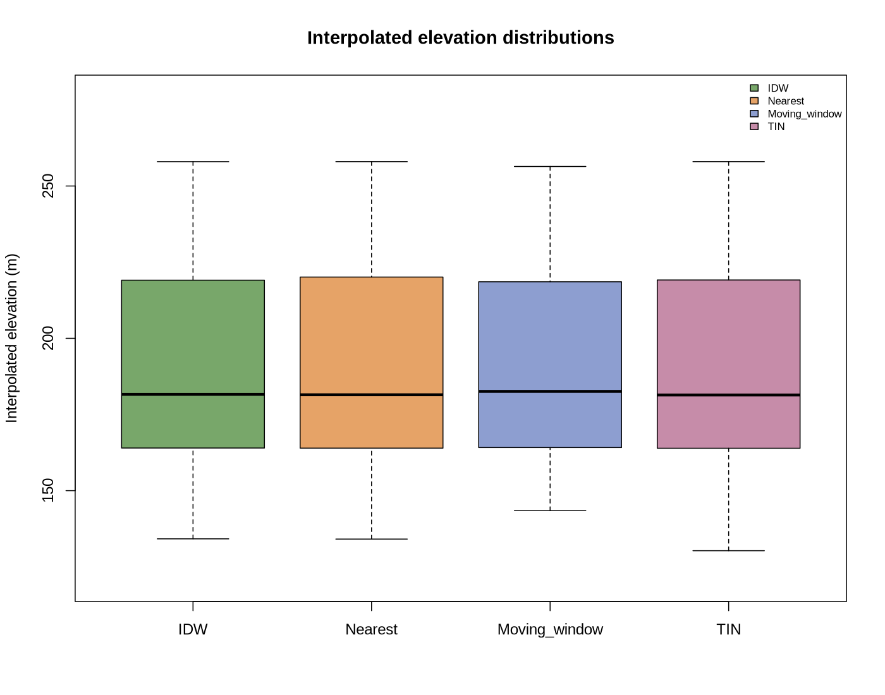
Executed R console output
method RMSE_m MAE_m 1 IDW 2.574524 1.701325 2 Nearest 3.855520 2.471389 3 Moving_window 4.706003 3.425265 4 TIN 1.850758 1.135321
These scores compare reconstructions to a resampled version of the same raster that supplied the exercise points. They are not independent estimates of survey accuracy. All methods use the same valid-cell support for the scores. The boxplots describe output distributions; their colours identify methods, and the line, box and whiskers denote median, quartiles and the conventional 1.5-IQR rule.
Export · Export useful rasters, point data and numerical checks
Save the regional 250 m product, local 25 m DEM, local terrain derivatives, interpolation surfaces and exercise points. Reopen a saved raster and verify its grid.
R code
dir.create("outputs/module-06/brittany", recursive = TRUE, showWarnings = FALSE)
writeRaster(dem_resampled, "outputs/module-06/brittany/dem-35-56-250m.tif", overwrite = TRUE)
writeRaster(dem2, "outputs/module-06/brittany/local-dem-25m.tif", overwrite = TRUE)
writeRaster(rast(terrain_maps), "outputs/module-06/brittany/local-terrain.tif", overwrite = TRUE)
writeRaster(rast(interpolations), "outputs/module-06/brittany/interpolations-10m-grid.tif", overwrite = TRUE)
writeVector(elev, "outputs/module-06/brittany/derived-exercise-points.gpkg", overwrite = TRUE)
write.csv(scores, "outputs/module-06/brittany/reconstruction-scores.csv", row.names = FALSE)
saved <- rast("outputs/module-06/brittany/local-dem-25m.tif")
stopifnot(compareGeom(saved, dem2))
error <- global(abs(saved - dem2), "max", na.rm = TRUE)[1, 1]
print(data.frame(max_export_difference_m = error))
stopifnot(error < 0.0001)
plot(saved, col = hcl.colors(60, "Terrain"), main = "Reopened local 25 m DEM: elevation (m)")Why these functions? · official R help
abs()— Turn signed differences into absolute differences for error checks. In R:help("abs", package = "base")compareGeom()— Verify that the reconstructed or exported grid matches the reference. In R:help("compareGeom", package = "terra")data.frame()— Present counts and validation results as tables. In R:help("data.frame", package = "base")dir.create()— Create the output directory before exporting rasters. In R:help("dir.create", package = "base")global()— Summarise raster values and quantify differences between grids. In R:help("global", package = "terra")hcl.colors()— Choose perceptually ordered colours for continuous values. In R:help("hcl.colors", package = "grDevices")plot()— Draw the raster with an explicit legend and units. In R:help("plot", package = "terra")print()— Display numerical output beneath the corresponding code. In R:help("print", package = "base")rast()— Open the numeric elevation tiles or create a target grid with an explicit extent, resolution and CRS. In R:help("rast", package = "terra")stopifnot()— Stop execution if a grid or export verification fails. In R:help("stopifnot", package = "base")write.csv()— Save reconstruction metrics as a reusable numerical table. In R:help("write.csv", package = "utils")writeRaster()— Save cell values, grid geometry and CRS as reusable GeoTIFF files. In R:help("writeRaster", package = "terra")writeVector()— Export DEM-derived exercise points with geometry, z values and CRS. In R:help("writeVector", package = "terra")
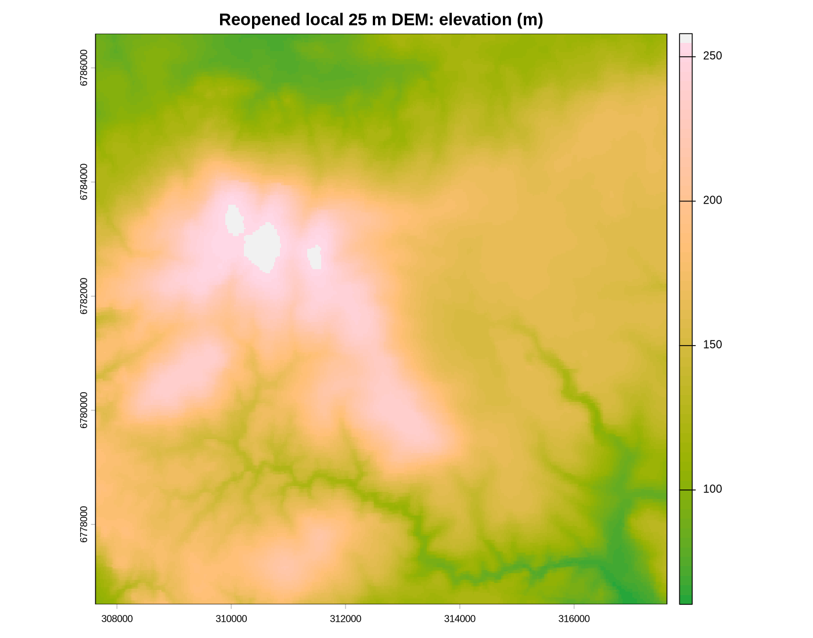
Executed R console output
max_export_difference_m 1 0
writeRaster() writes cell values, grid geometry and CRS, unlike saving a plot image. writeVector() preserves the exercise-point geometry and attributes. Large intermediate 25 m mosaics are recreated under work/ and are not needed in the published website. The compact input tiles preserve the complete source coverage for rerunning the chapter.
Practice
Compare Morbihan and Ille-et-Vilaine with one shared elevation scale. Then change the interpolation radius from 400 to 200 m and the IDW power from 2 to 1. Record changes in missing cells, surface texture and reconstruction RMSE.
Expected reasoning
A common scale makes map colours comparable. A smaller radius can leave more missing values; changing power changes the relative contribution of near and distant points. A smaller reconstruction error here measures agreement with the same source DEM, not independent field accuracy. A 10 m output grid alone does not imply 10 m terrain information.
Official resources: terrain definitions · IDW · nearest and linear interpolation · moving window · GDAL linear TIN algorithm.